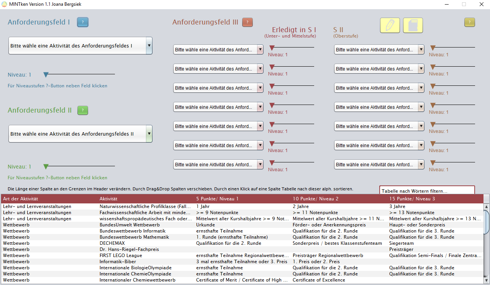

Was ist MINTken?
MINTken ist ein freies Programm welches Schülern dabei helfen soll, zu überprüfen, ob ihre bisherigen Leistungen sie für das MINT-EC Zertifikat qualifizieren.
Dabei werden von mehreren Auswahlboxen die erfüllten Aktivitäten und die jeweilig erreichten Niveaus ausgewählt.
Bei einer erfolgreichen Eingabe wird abhängig von den Aktivitäten und deren Niveaus die Zertifikatsstufe, die momentane Punktzahl und ggf. die Bedingung zur nächsten Stufe eines Anforderungsfeldes ausgegeben.
Das Programm entstand während einer Facharbeit am Freiherr-vom-Stein Gymnasium Hamm und befindet sich derzeitig in der Version 1.0.


Installation und Programmausführung
Damit das Programm funktioniert, muss Java Runtime (JRE) gedownloadet werden.
Eine Möglichkeit bietet die offizielle Oracle Seite (Java für Benutzer reicht aus).
1. Programmordner hier als ZIP-Datei downloaden und speichern. Dazu auf "Clone or download" und anschließend "Download ZIP" klicken.
2. Entpacken des Ordners.
3. Öffnen des Ordners "MINTken" > "dist".
4. "MINTken.jar" ausführen.
Zukünftige Updates
Die momentane Version (1.0) ist das Endergebnis meiner Facharbeit, für dessen Fertigung ich sechs Wochen Bearbeitungszeit hatte.
Jedoch ziele ich noch einige Veränderungen/Verbesserungen an, unter anderem
Eine Suchfunktion für die Aktivitäten des 3. Anforderungsfeldes
Bestimmung des Dateinamens und Speicherungspfades bei der Auswertungsdatei
Für Schulen: Per Nutzeroberfläche Aktivitäten hinzufügen und entfernen können
Eine ausgewählte Aktivität in der Tabelle direkt zur Miteinberechnung hinzufügen können
Die Textausgaben leserfreundlicher gestalten
Refactoring des Codes
Geplant ist das erste Update Ende Dezember / Anfang Januar.
Bei weiteren Vorschlägen melden Sie sich an die im Urheberrechtshinweis zu findende Email.
Urheberrechtshinweis MINTken
Das Programm und seine Inhalte verwenden die CC-BY-NC-SA 4.0
(Creative Commons, Namensnennung, nichtkommerziell, gleiche Weitergabe) Lizenzform.
Das Urheberrecht liegt, soweit nicht ausdrücklich anders gekennzeichnet, bei Joana Bergsiek & dem MINT-EC.
Bitte wenden Sie sich bei Fragen oder anderen Angelegenheiten an officialmintken@gmail.com.
Das Programm, welches unter der CC-BY-NC-SA-Lizenz veröffentlicht wurden, darf nach den maßgeblichen Lizenzbedingungen verwendet, bearbeitet und verbreitet werden.
20.09.2016
Mehr zu Creative Commons
Offizielle Seite des MINT-ECs
Website des Freiherr-vom-Stein Gymnasiums
{kind=link}
{kind=link}